Первая в ОАЭ
платформа CRE-
сделок без агентов
В роли лида я спроектировала с нуля платформу RealDeal — веб-сервис для инвестиций в коммерческую недвижимость ОАЭ. От аналитического демо до коммерческого MVP: интерактивная карта, каталог, первый в ОАЭ флоу онлайн-сделок на UAE PASS, подписка.
инвестиций
онлайн-сделка в ОАЭ
закрытия сделки
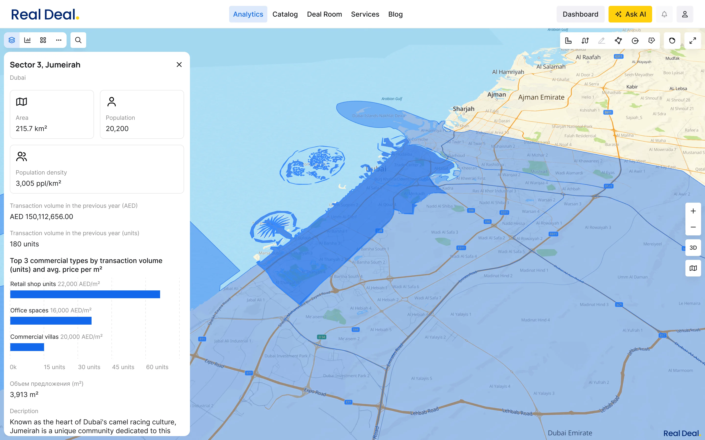
Рынок CRE в ОАЭ: непрозрачный, завязанный на агентов
Рынок коммерческой недвижимости в ОАЭ непрозрачен. Весь завязан на агентов. Инвесторы и их управляющие менеджеры принимают решения без единой аналитики и тратят недели на проверку объектов.
- задержки сделок (в среднем 45–60 дней);
- высокая зависимость от агентов, которым не доверяют;
- решения «на ощущениях», а не на данных.
Задача
Взять массив рыночных данных и превратить его в инструмент принятия инвестиционных решений. И доказать, что платформа на аналитике и фактах работает лучше, чем агентская модель.
Провела 11 глубинных интервью с инвесторами и управляющими менеджерами. Оттуда вылезли все ключевые боли при работе с агентами и существующими сервисами. Это легло в основу продуктовых гипотез. Валидацию получили позже: сначала через реакцию на демо, потом через фидбэк закрытой беты.
Источник данных
На старте работали с открытыми данными рынка Дубая. После успешного демо получили доступ к закрытым госданным Dubai Land Department (DLD) через партнёрство с семьёй шейха. Это стало ключевым конкурентным активом.
Конкуренты
Локальные порталы Property Finder и Bayut сфокусированы на жилой недвижимости. Международные платформы, такие как LoopNet и CREXI, не имеют локализации под ОАЭ. RealDeal остаётся единственной платформой с полным циклом CRE-сделок и прямой интеграцией с DLD.
ЦА
- Инвестор — принимает финансовые решения, оценивает доходность, проводит сделки
- Управляющий менеджер — ищет объекты, анализирует рынок, готовит варианты для инвестора
Ключевые задачи
- Понять, где выгодно инвестировать
- Оценить доходность конкретного объекта
- Сузить выбор под свой бюджет и стратегию
- Совершить сделку онлайн, без агентов
- Управлять объектом и сдавать в аренду в том же сервисе
11 интервью: три барьера, три решения
1. Данные разрознены по источникам, нет единого инструмента анализа. Решение: аналитическая карта с данными DLD.
2. Решения принимаются «на глаз», нет инструмента оценки объекта на месте. Решение: ROI-калькулятор в карточке.
3. Путь от анализа до сделки разорван, менеджеры работают без единого инструмента. Решение: сквозной сценарий от карты до онлайн-сделки.
«Хочу видеть доходность сразу, прямо на объекте, без Excel и агента»
Управляющий менеджер
Путь пользователя
Анализ рынка → поиск объекта → оценка ROI → онлайн-сделка → управление объектом
Ключевые решения из десятков принятых за год
За год было принято множество продуктовых решений. Вот четыре, которые лучше всего показывают мой подход:
1. Стратегия
Аналитика вместо широты фич, и два раунда инвестиций
Контекст. Руководство хотело запустить всё сразу. Я настояла на другом: цель демо не полнота продукта, а доказательство ценности данных. Аналитика — это наш уникальный дифференциатор, и фокусироваться нужно было на ней. Это сократило путь к валидации с 9–12 до 4–5 месяцев.
Решение. Сфокусировала демо исключительно на аналитической карте, без каталога, без сделок, без лишних фич.
Результат. $2.5M после демо. Потом MVP с полным сценарием, $5M на раунде A.
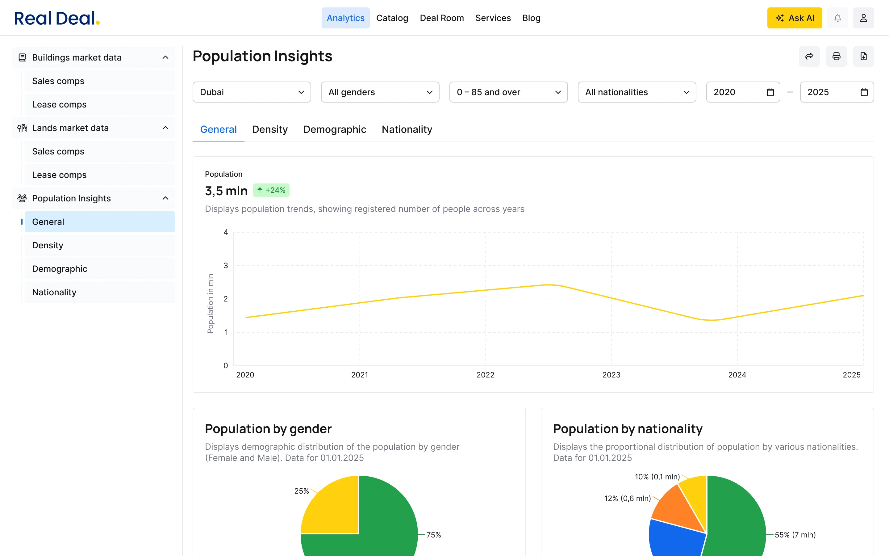
Аналитика в виде графиков (дашборд)
2. Карта
От визуального хаоса к зональной аналитике
Контекст. Руководство хотело показать максимум данных: большое количество слоёв, некоторые сгруппированы в папки, все для вау-эффекта. Проблема была двойная: визуальный хаос от количества и UX-ловушка: включив внутри группы слой и выйдя назад пользователь не видел, что именно включено. Я предложила другой вариант и протестировать их оба с инвесторами.
Решение. Убрала группы, каждый слой стал самодостаточным со своими фильтрами и аналитикой. Максимум 5 слоёв одновременно. Пользователь собирает нужный набор и сохраняет как пресет. Инструменты зон — радиус, контур, изохрона — показывают данные именно по выделенной территории. Выбрала URBI API: 3D с этажностью, режимы карты.
Результат. 3D-карта стала главным аргументом на демо. Инвесторы быстрее переходили от анализа к выбору объекта. Зональная аналитика стала ключевым отличием от конкурентов.
Хотели синхронизировать карту с дашбордами. Из-за технических ограничений и дедлайна отказались. Лучше сильная карта, чем слабая синхронизация.
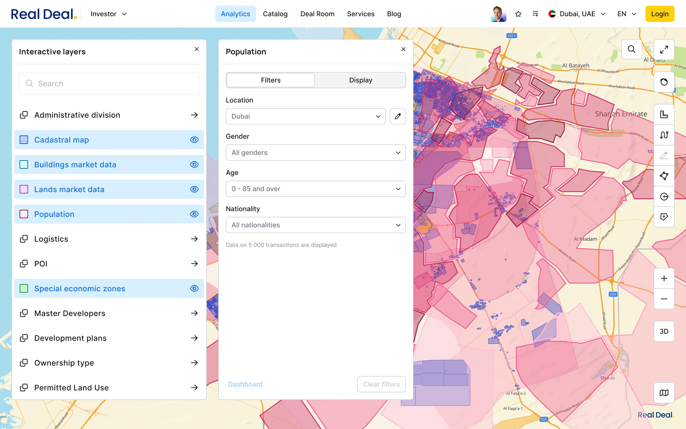
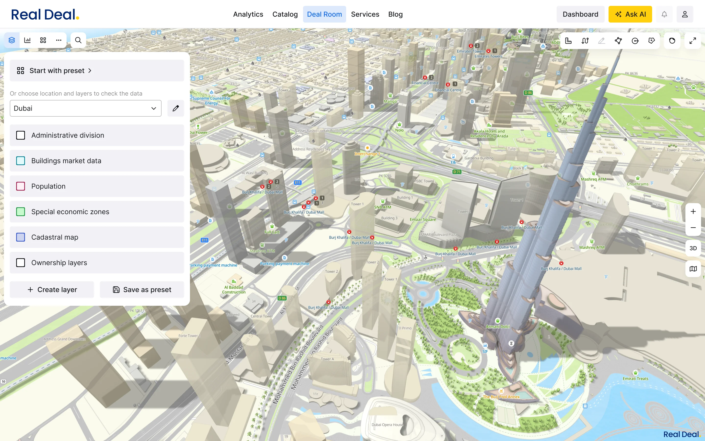
Много слоёв → 3D с пресетами
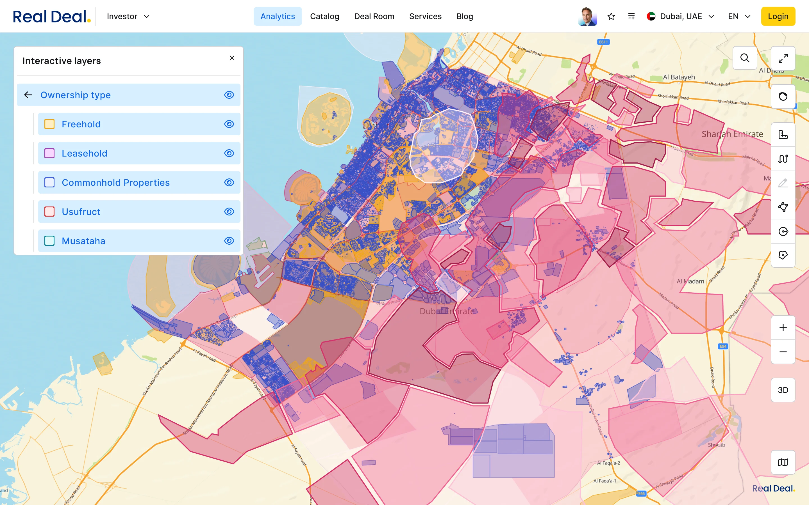
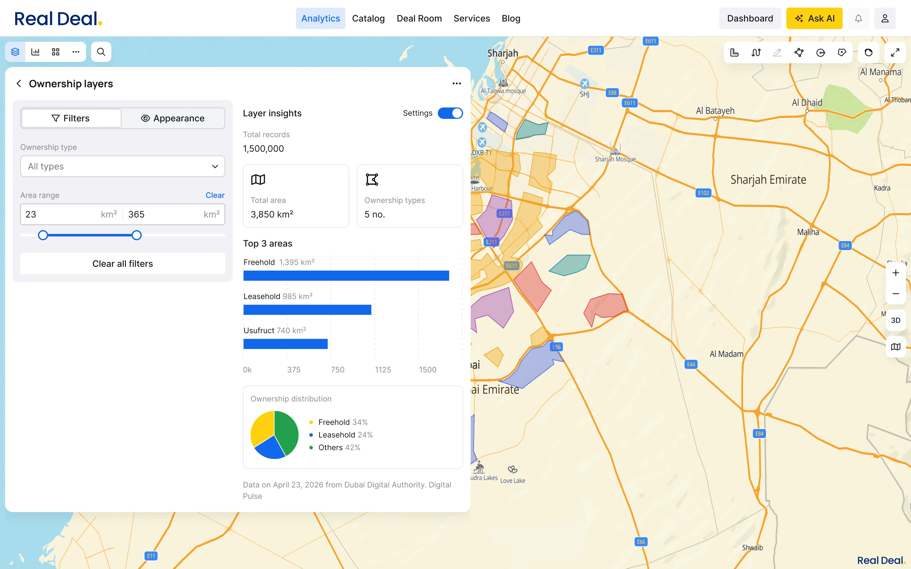
Группа слоёв → Фильтрация и аналитика
3. Онлайн-сделки
Первая в ОАЭ удалённая CRE-сделка без агента
Контекст. Ни одна платформа в ОАЭ не позволяла провести CRE-сделку полностью онлайн. Главный барьер — это электронная подпись, без неё любой документ требовал физического присутствия сторон.
Решение. Компания получила доступ к UAE PASS (государственная система цифровой идентификации ОАЭ). Это открыло возможность для юридически значимой электронной подписи. Я спроектировала флоу с нуля: документы и договора формируются на платформе, управление видимостью документов, встроенный чат между сторонами сделки. Инвестор покупает или арендует объект в Дубае из любой точки мира.
Результат. Решили ключевое ограничение рынка, которое блокировало онлайн-сделки во всём регионе. UAE PASS стал юридическим фундаментом всего флоу сделок.
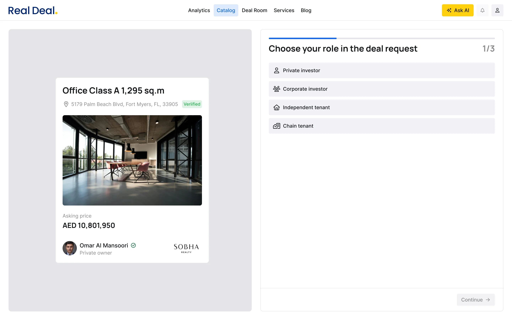
Запрос на сделку: инвестор инициирует из карточки объекта
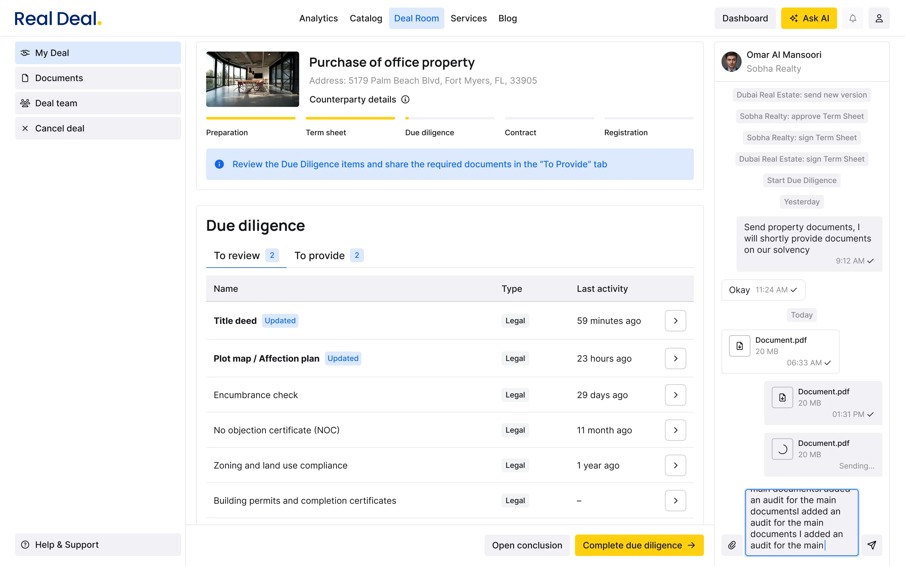
Процесс сделки: документы, встроенный чат
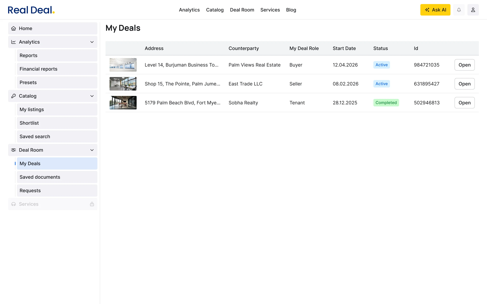
Мои сделки: дашборд со статусами и управлением
4. Доверие
Система верификации объектов
Контекст. Без механизма проверки каталог воспринимался бы как ещё один непроверенный источник.
Решение. Владелец загружает документы, платформа сопоставляет их с данными объекта. Чем больше соответствий, тем выше процент верификации, видимый покупателю.
Результат. Решила проблему доверия без ручной модерации.
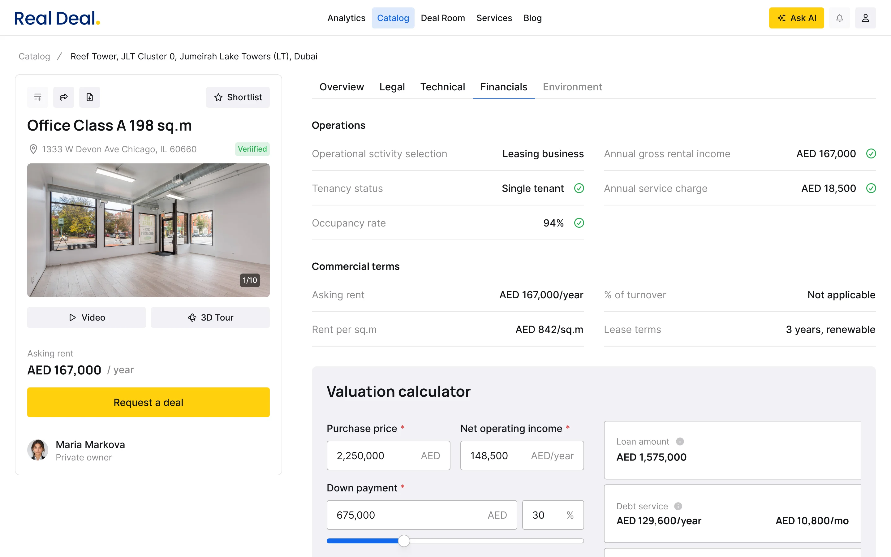
Карточка объекта: верификация + ROI-калькулятор
Как Lead Product Designer: что делала сверх дизайна
Влияние на стратегию: активно участвовала в определении приоритетов MVP. Настояла на фокусе демо вопреки команде, и это напрямую повлияло на привлечение инвестиций. Участвовала в формировании roadmap.
Работа с C-level: работала с CTO, PM и стейкхолдерами. Регулярно защищала продуктовые решения на внутренних ревью. Готовила материалы для раундов (20+ презентаций инвесторам на конференциях и закрытых встречах в Дубае).
Команда и процессы: пересобрала команду, заменила джунов на сильных специалистов. Через месяц работали самостоятельно. Дизайн-система с нуля: 25+ компонентов, токены, стандарты с первого спринта.
Два раунда, два дизайн-решения
Фокус на аналитике = инвесторы увидели уникальную ценность данных. Партнёрство с шейхом, доступ к DLD.
Каталог + онлайн-сделки + верификация + подписка. После закрытой беты с 15 инвесторами: продукт готовится к открытому запуску. Первая платформа CRE-сделок без посредников в ОАЭ.
Дашборд, центр ежедневной работы пользователя: сделки, шортлист, портфель, аналитика. AI-ассистент встроен как следующий слой: автоматизация анализа и подбор объектов под стратегию инвестора.
Экспансия: Абу-Даби, Саудовская Аравия.
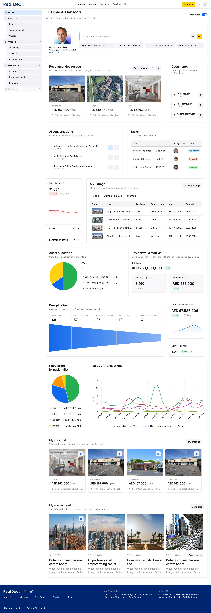
Дашборд: сделки, шортлист, портфель, аналитика, AI-ассистент
сделки
за аренду
за продажу
шагов
Что бы я сделала иначе
Решения, которые сейчас вижу как ошибочные или недоведённые:
- Довела бы синхронизацию карты и дашбордов. Идея потеряна из-за дедлайна.
- Сразу пересобрала бы команду. Первые 6 месяцев теряли скорость.
- С первого дня работала бы напрямую со стейкхолдерами, а не через посредников.